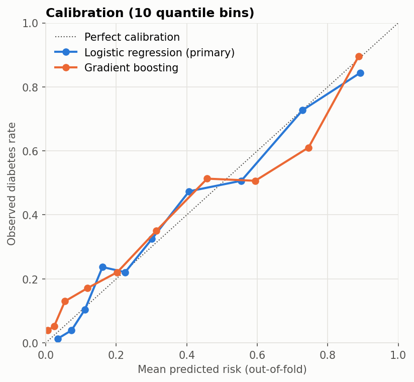

Endocrinology · Clinical prediction model
Type 2 diabetes risk model (Pima Indians Diabetes data)
Logistic regression reached ROC-AUC 0.832 (95% CI 0.807–0.864), and more complex models didn't help. At the default threshold the model misses 43% of women with diabetes, which the earlier version's 77% accuracy figure hid.
- Data
- Pima Indians Diabetes Database (NIDDK) via OpenML; n = 768 women
- Outcome
- Diabetes, with a prevalence of 34.9%
- Method
- Logistic regression, linear SVM, gradient boosting; stratified 5-fold CV ×20
- Status
- Research only; no external or clinical validation
The question
The Pima data is a common machine-learning teaching dataset. Several of its columns record physiologically impossible zeros, such as a blood pressure or BMI of zero. Treated as real values, as the earlier version of this project did, they quietly distort a model.
This project asks what an honest model on this data looks like: impossible values handled as missing, every preprocessing step kept inside cross-validation folds, and results reported as risks and operating points rather than a single accuracy figure.
Data
- Source: the Pima Indians Diabetes Database (NIDDK), via OpenML (dataset 37), included in the repository with checksums. OpenML lists its licence only as “Public”, not as a named licence.
- Population: 768 Pima Indian women aged 21 or older; diabetes prevalence 34.9%.
- Impossible zeros: Glucose (5), BloodPressure (35), SkinThickness (227), Insulin (374) and BMI (11).
Approach
- Zeros are missing values: converted to missing, then median-imputed with missingness indicators inside each training fold.
- Models: logistic regression (primary), a linear SVM (the original project's model family) and gradient boosting.
- Validation: repeated stratified cross-validation (5 folds ×20) with out-of-fold probabilities, percentile bootstrap confidence intervals, Brier score and a calibration curve.
- Threshold selection: a threshold for 85% sensitivity is chosen by inner cross-validation on each training fold and applied unchanged to the test fold.
Results
Discrimination: ROC-AUC with 95% confidence interval
Stratified 5-fold cross-validation ×20. The axis starts above zero to show the intervals.
| Model | ROC-AUC (95% CI) | PR-AUC | Brier | Accuracy at 0.5 |
|---|---|---|---|---|
| Logistic regression (primary) | 0.832 (0.807–0.864) | 0.708 | 0.158 | 0.771 |
| Linear SVM | 0.835 (0.807–0.865) | 0.713 | 0.156 | 0.772 |
| Gradient boosting | 0.826 (0.793–0.853) | 0.690 | 0.162 | 0.759 |
Baselines: a Brier score of 0.227 for predicting the 34.9% prevalence for everyone, and an accuracy of 0.651 for always predicting “no diabetes”.
Operating points
| Threshold | Sensitivity | Specificity | PPV | NPV |
|---|---|---|---|---|
| 0.5 | 0.572 | 0.878 | 0.716 | 0.793 |
| Set in training folds for 85% sensitivity | 0.853 | 0.626 | 0.550 | 0.888 |
At the default threshold the model misses 43% of women with diabetes. For screening, the sensitivity-targeted threshold met its target on unseen data, at the cost of more false positives.
Calibration

Adjusted odds ratios
| Predictor | Odds ratio (95% CI) |
|---|---|
| Glucose (2-hour OGTT) | 2.95 (CI in the repository README) |
| BMI | 1.87 (1.51–2.31) |
| Pregnancies | 1.49 (1.19–1.85) |
| Diabetes pedigree function | 1.38 (1.13–1.68) |
| Age | 1.22 (0.97–1.53) |
| Diastolic blood pressure | 0.90 (0.73–1.10) |
A four-variable model (glucose, BMI, age and pedigree) reaches ROC-AUC 0.827, nearly matching the full model.
Limitations and appropriate use
- Not clinically validated. This is a research and education project, not a clinical screening tool.
- One specific population (Pima Indian women aged 21 or older), with no external validation.
- Glucose is the 2-hour oral glucose tolerance test value, which is part of the diagnostic criterion. This is closer to diagnostic classification than to predicting future diabetes.
- Insulin is missing for 49% of women and skinfold for 30%. Multiple imputation would be more rigorous than median imputation.
What changed from the earlier version
The earlier notebook kept impossible zeros as real values, fitted the scaler on all the data before splitting, reported only single-split accuracy, and showed a hand-drawn “key predictors” chart that no analysis had produced. All of this was replaced with the analysis above.
Reproduce
python -m venv .venv
.venv\Scripts\activate # macOS/Linux: source .venv/bin/activate
pip install -r requirements.txt
pytest
jupyter nbconvert --to notebook --execute --inplace notebooks/diabetes_risk_model.ipynb- Source code: github.com/DexterAmaning/Diabtetes (MIT licence; the repository name keeps its original spelling)
- Notebook: diabetes_risk_model.ipynb (about 2 minutes to run on a laptop)
- Data provenance: data/README.md
- Environment: Python 3.13 with pinned requirements and a pytest suite
- Version described here: commit
69fc039